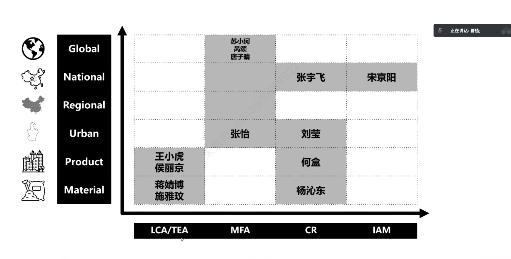

Researches Orientation 1
Detials about Researches Orientation 1
Researches Orientation 2
Detials about Researches Orientation 2
Researches Orientation 3
Detials about Researches Orientation 3

{% comment %}
{% include base_path %}
{% for post in site.teaching reversed %}
{% include archive-single.html %}
{% endfor %}
{% endcomment %}